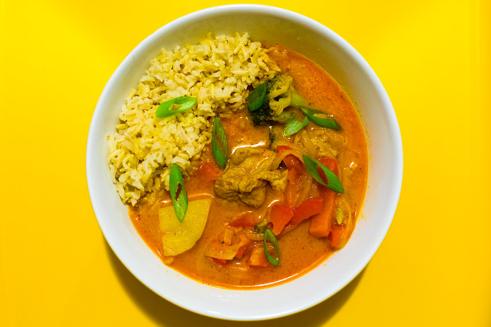

Thai Vegetable Curry

Serves : 3-4
Time : 30-35 minutes
Ingredients :
-
For the Vegetables
- 1 cup broccoli
- 1 cup bell peppers
- 1 cup carrots
- 1 cup mushrooms
- 1/2 cup baby corn
- 1/2 cup zucchini
- 1/2 cup tofu, cubed
-
For the Curry
- 1 tbsp oil
- 2-3 tbsp vegetarian Thai curry paste
- 400 ml coconut milk
- 1/2 cup water or vegetable stock
- 1 tbsp soy sauce
- 1 tsp brown sugar
- 1 tsp lime juice
- Salt to taste
-
For Garnishing
- Fresh basil
- Fresh coriander
- Red chilli
- Spring onions
Method :
- Cut all the vegetables into bite-sized pieces.
- Keep harder vegetables such as carrots and broccoli separate from softer vegetables such as mushrooms and
zucchini.
- Heat 1 tbsp oil in a large pan.
- Add the vegetarian Thai curry paste.
- Fry the curry paste for 1-2 minutes until fragrant.
- Add about 1/2 cup coconut milk.
- Stir well and cook for about 2 minutes.
- Add carrots, broccoli, and baby corn.
- Cook for about 3-4 minutes.
- Add mushrooms, bell peppers, zucchini, and tofu.
- Add the remaining coconut milk.
- Add 1/2 cup water or vegetable stock.
- Add soy sauce and brown sugar.
- Simmer gently for 5-8 minutes.
- Check the vegetables. They should be cooked but still have some bite.
- Add lime juice.
- Taste and adjust the salt and other seasonings.
- Garnish with fresh basil, coriander, red chilli, or spring onions.
- Serve hot with steamed jasmine rice.
Tip: Check that the Thai curry paste is vegetarian because some Thai curry pastes contain shrimp
paste or fish sauce. Do not boil the coconut milk aggressively; keep the curry at a gentle simmer for a smoother
texture.